install.packages(c("here", "janitor", "lmtest", "sandwich",
"tidymodels", "tidyverse"))
# *lock in* the session state
renv::snapshot()Master
The code and report is entirely my own work, unless indicated otherwise. ChatGPT was used as an AI assistant to help write code.
Summary
Goal of the challenge – Determine whether issuing a red card ultimately leads to more total goals in a football match.
Data – 20 000 football matches (10 European leagues, 5 seasons) (games.csv) + minute-stamped goals & red-cards (events.csv).
Two analytical lenses
Across-matches: compare matches with vs. without a red.
- OLS (no controls) → +0.05 extra goals (p > .05).
- OLS (with controls) → +0.07 extra goals (p < .05).
- Poisson GLM (with controls) → +2.6 % goals (p < .05).
- Limitation: ignores timing; prone to omitted-variable bias.
Within-match: use only games with a single red card.
- Paired pre/post rate diff ⇒ +0.013 g · min⁻¹ (p < .05).
- Poisson GLM + log-exposure offset ⇒ per-minute goal rate ↑ 55 % after a red card
(exp(γ̂₁) ≈ 1.55, ϕ ≈ 1.05).
Robustness – Effect survives league, team, season/trend controls.
Core finding
Once a match goes to 10 v 11, the combined scoring rate of both teams rises by ≈ 55 %.
Caveats – Unobserved match-intensity & fatigue may confound across-match results; even in within-match comparisons omitted variables may still exist.
Directions for Future Work
Heterogeneity checks
- Separate uplifts by league, home-vs-away offender, and card-minute buckets (0–15, 16–30 …).
Richer causal frameworks
- Propensity-score matching at match level using league, season, team attack/defence ratings.
- Minute-resolved Difference-in-Differences: untreated minutes from no-card matches as control.
- Event-time hazard models (discrete-time logit / Cox PH) with time-varying “RedOnPitch” covariate.
- Synthetic control for repeated fixtures (same home/away pair across seasons).
Model extensions
- Allow for multiple cards: indicator for ≥ 2 reds; interaction with first-card timing.
- Hierarchical (mixed-effects) Poisson to share strength across teams/leagues.
1 Install packages & take snapshot
2 Load required packages
# restore the snapshot taken above
renv::restore()
library(here) # build OS‑agnostic paths
library(janitor) # data cleaning helpers
library(lmtest)
library(sandwich)
library(tidymodels) # modelling grammar
library(tidyverse) # ggplot2, dplyr, etc.3 Read & tidy data
#---------------------------------------------------------------------
# Games data set ----------------------------------------------------
#---------------------------------------------------------------------
games <- read_csv(here("games.csv")) |>
mutate(
home_team = as_factor(home_team),
away_team = as_factor(away_team),
competition = as_factor(competition),
total_goals = home_goals + away_goals
) |>
mutate(
year = as_factor(year(date)),
month = as_factor(month(date)),
day = as_factor(day(date)),
season = as_factor(
case_when(
date < "2019-06-01" ~ "2018/2019",
date > "2019-06-01" & date < "2020-04-01" ~ "2019/2020",
date > "2020-04-01" & date < "2021-06-01" ~ "2020/2021",
date > "2021-06-01" & date < "2022-06-01" ~ "2021/2022",
date > "2022-06-01" ~ "2022/2023",
)
),
.after = date
) |>
group_by(season) |>
mutate(
day_in_season = as.numeric(difftime(date, min(date), units = "days")),
.after = season
) |>
ungroup()
#---------------------------------------------------------------------
# Events data set ---------------------------------------------------
#---------------------------------------------------------------------
events <- read_csv(here("events.csv")) |>
mutate(
side = as_factor(side),
type = as_factor(type)
)
red_minutes <- events |>
filter(type == "red_card") |>
arrange(game_id, minute) |>
group_by(game_id) |>
mutate(order = row_number(),
card_label = paste0("red_card", order, "_minute")) |>
select(game_id, card_label, minute) |>
pivot_wider(names_from = card_label,
values_from = minute) |>
ungroup()
red_counts <- events |>
group_by(game_id) |>
summarise(
has_red_card = any(type == "red_card"),
home_red_cards = sum(type == "red_card" & side == "home"),
away_red_cards = sum(type == "red_card" & side == "away"),
total_red_cards = sum(type == "red_card")
) |>
ungroup()
events <- events |>
left_join(red_minutes, by = "game_id") |>
left_join(red_counts, by = "game_id")
#---------------------------------------------------------------------
# Merged data sets --------------------------------------------------
#---------------------------------------------------------------------
df_all <- games |>
left_join(events, by = "game_id") |>
mutate(
has_red_card = replace_na(has_red_card, FALSE),
home_red_cards = replace_na(home_red_cards, 0),
away_red_cards = replace_na(away_red_cards, 0),
total_red_cards = replace_na(total_red_cards, 0)
)
df_simple <- games |>
left_join(red_counts, by = "game_id") |>
mutate(
has_red_card = replace_na(has_red_card, FALSE),
home_red_cards = replace_na(home_red_cards, 0),
away_red_cards = replace_na(away_red_cards, 0),
total_red_cards = replace_na(total_red_cards, 0)
)4 EDA
Key observations from EDA:
Goals:
Goals seem to follow a Poisson distribution (low count data) and more home goals are usually scored.
Amount of goals differs by league.
No time trend in the average number of goals on each match day exists across seasons or within seasons.
Withing games a slight positive trend in when goals are scored seems to exist (e.g. more goals in second half than in first half).
Red cards:
Most games have no red cards, range of total red cards is 0 to 5.
Red cards do not differ by sides.
Average number of red cards differs greatly by league.
Time trend in the average number of red cards on each match day does not exist across seasons, but does exist within seasons. Within seasons the trend is mostly negative, meaning that fewer red cards are given towards the end of each season.
Within games a cleara positive trend in when red cards are given exists (number of red cards given increases steadily over the course of the game).
Conclusions from EDA:
Should model goals with Poisson distribution (check for overdispersion –> negative binomial distribution).
Have to control for league, time trend within season and time within games to avoid running into omitted variable bias. As an example of what could be an omitted variable:
- It could be the case that the Ligue 1 has more goals and red cards on average than other leagues, but due to another factor such as “culture/intensity of games”, i.e. both red cards and goals are correlated with “culture/intensity of games”. This factor would then represent an omitted variable and would bias our estimate of the effect of red cards on goals.
However, omitted variable bias could still persist, sincewe are limited by the data we have. As another example of an omitted variable we might not be able to control for:
- It probably is the case that fatigue of players increases over the course of a game. It is also very likely that fatigue is correlated with both red cards and goals. Hence, fatigue would be an omitted variable which we might not be able to control for and would thus bias our estimate. (we would wrongly attribute the positive effect of fatigue on both red cards and goals to the effect of red cards on goals).
Although no plot for the average number of goals or red cards on a team basis was created, it is likely that differences exist across teams as well and that team-specific effects should probably be controlled for.
4.1 Goals
# Total goals
df_simple |>
ggplot(aes(x = total_goals)) +
geom_bar(fill = "blue", alpha = 0.6) +
scale_x_continuous(breaks = function(x) seq(floor(min(x)), ceiling(max(x)),
by = 1),
minor_breaks = NULL)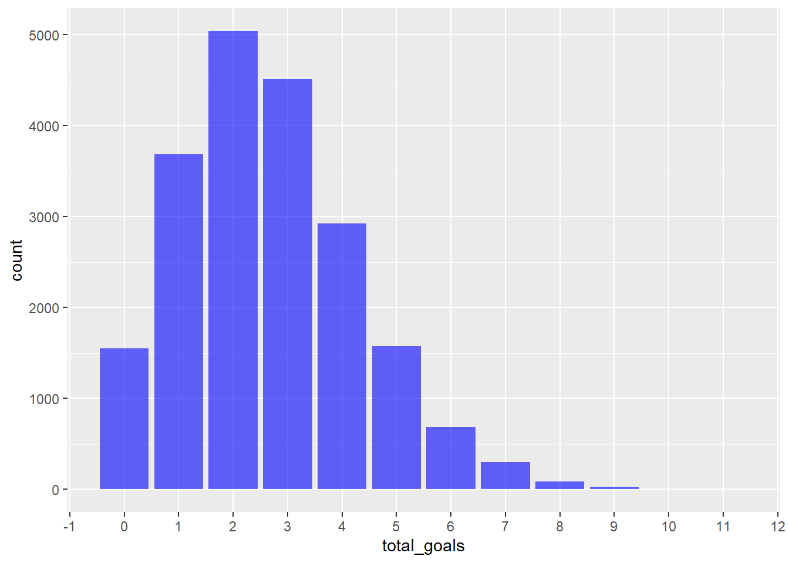
# Home vs. Away goals (more home goals)
df_simple |>
pivot_longer(cols = c(home_goals, away_goals), names_to = "side",
values_to = "goals") |>
ggplot(aes(x = goals, fill = side)) +
geom_histogram(position = "identity", alpha = 0.5, binwidth = 1) +
scale_x_continuous(breaks = function(x) seq(floor(min(x)), ceiling(max(x)),
by = 1),
minor_breaks = NULL)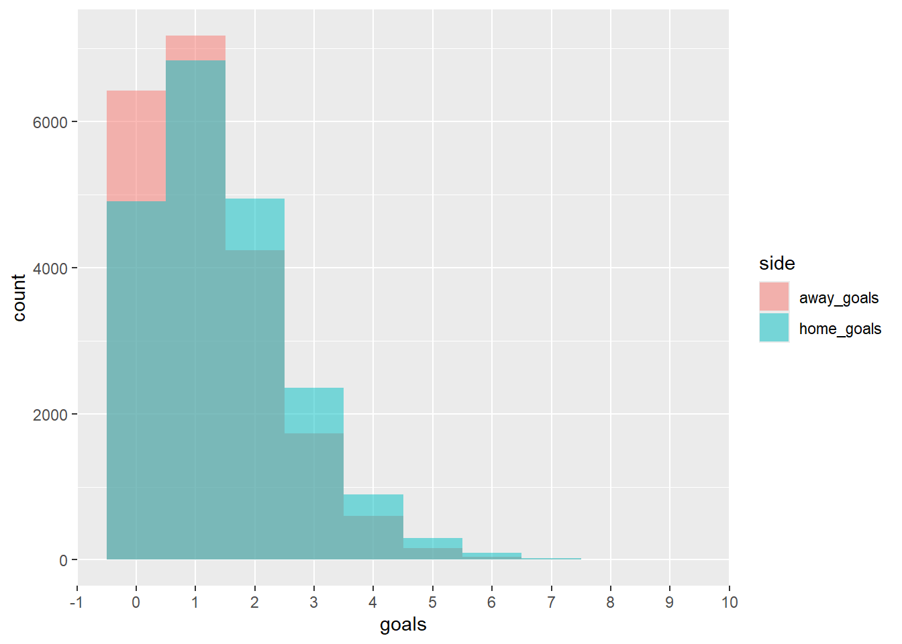
# Total goals by league (league effects seem to exist)
df_simple |>
ggplot(aes(x = total_goals, color = competition)) +
geom_density(linewidth = 0.75, adjust = 2)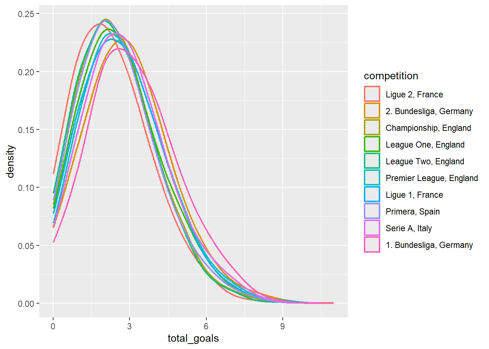
df_simple |>
ggplot(aes(x = total_goals, y = competition)) +
geom_boxplot()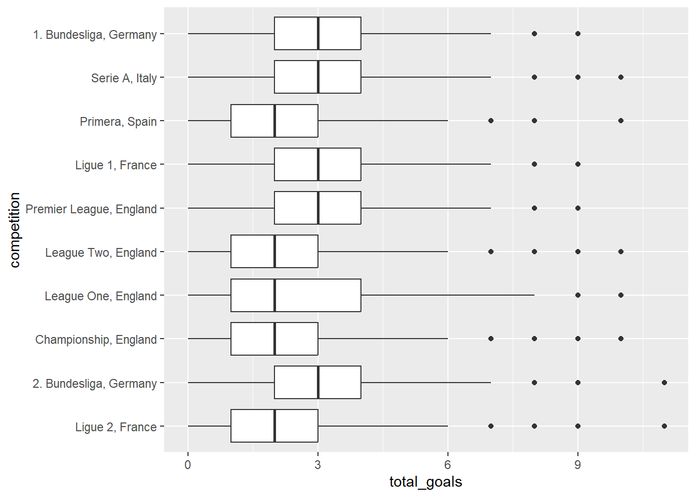
# Helper dataset
df_simple_avg_goals <- df_simple |>
group_by(season, date) |>
summarise(avg_total_goals = mean(total_goals)) |>
ungroup()
# Trend in total goals over time across seasons (no effect)
df_simple_avg_goals |>
ggplot(aes(x = date, y = avg_total_goals)) +
geom_point() +
geom_smooth(method = "lm")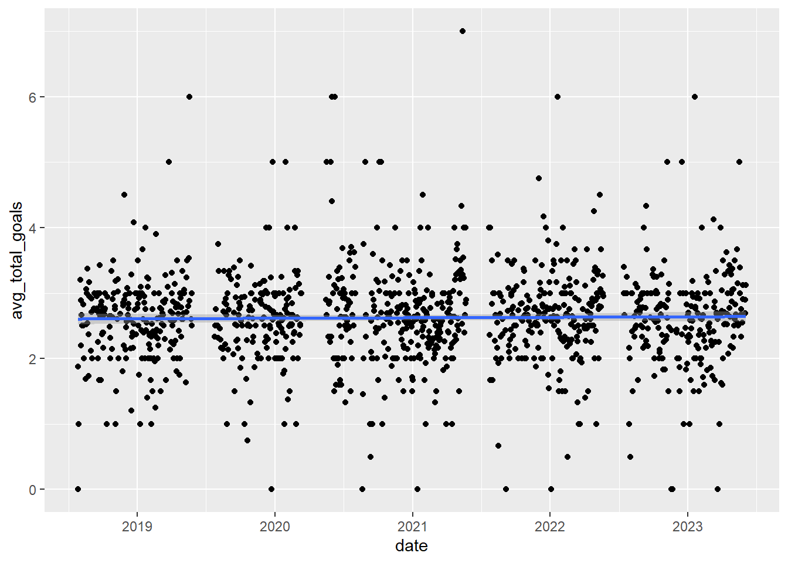
tidy(lm(avg_total_goals ~ date, data = df_simple_avg_goals))# A tibble: 2 × 5
term estimate std.error statistic p.value
<chr> <dbl> <dbl> <dbl> <dbl>
1 (Intercept) 2.23 0.766 2.92 0.00361
2 date 0.0000210 0.0000411 0.511 0.609 # Trend in total goals over time within seasons (no effect)
df_simple_avg_goals |>
ggplot(aes(x = date, y = avg_total_goals, colour = season, group = season)) +
geom_point() +
geom_smooth(method = "lm")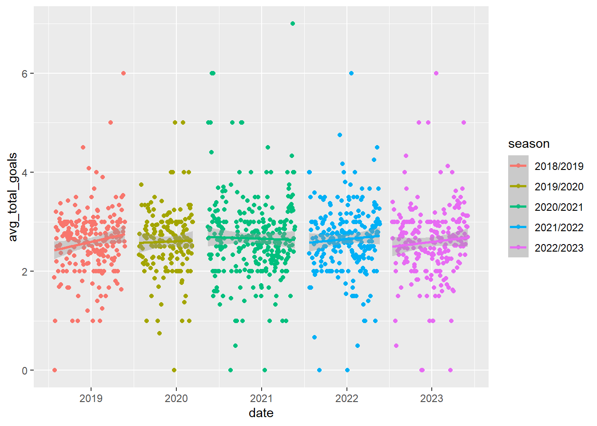
tidy(lm(avg_total_goals ~ date * season, data = df_simple_avg_goals))# A tibble: 10 × 5
term estimate std.error statistic p.value
<chr> <dbl> <dbl> <dbl> <dbl>
1 (Intercept) -16.7 10.2 -1.63 0.103
2 date 0.00108 0.000572 1.88 0.0600
3 season2019/2020 15.6 18.4 0.845 0.399
4 season2020/2021 22.4 12.5 1.79 0.0733
5 season2021/2022 10.8 14.6 0.738 0.461
6 season2022/2023 8.33 14.2 0.585 0.559
7 date:season2019/2020 -0.000874 0.00102 -0.859 0.391
8 date:season2020/2021 -0.00124 0.000690 -1.80 0.0722
9 date:season2021/2022 -0.000627 0.000793 -0.790 0.429
10 date:season2022/2023 -0.000511 0.000767 -0.667 0.505 # Timing of goals within games
df_all |>
filter(type == "goal") |>
ggplot(aes(x = minute)) +
geom_histogram(fill = "blue", alpha = 0.5, binwidth = 1)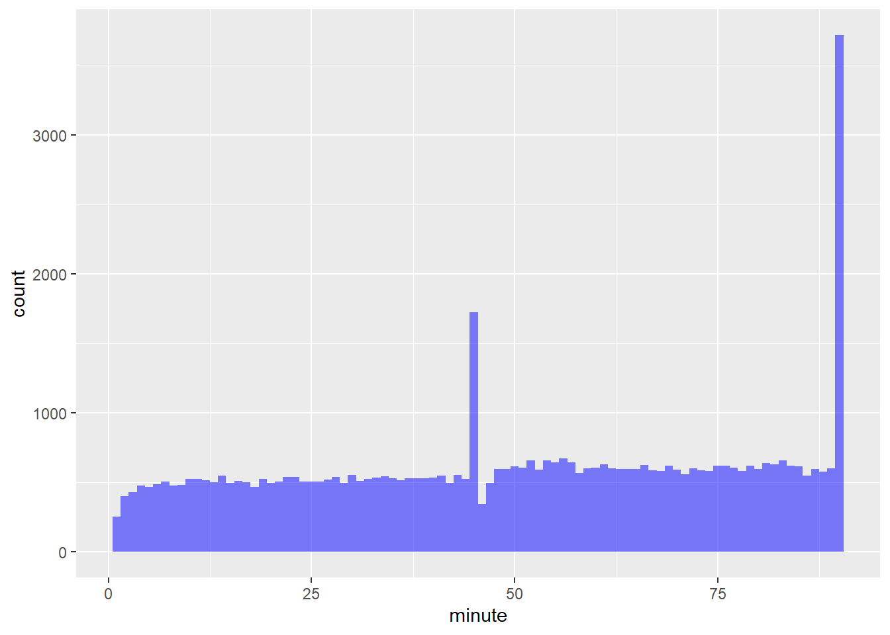
4.2 Red Cards
# Total red cards
df_simple |>
ggplot(aes(x = total_red_cards)) +
geom_bar(fill = "blue", alpha = 0.6) +
scale_x_continuous(breaks = function(x) seq(floor(min(x)), ceiling(max(x)),
by = 1),
minor_breaks = NULL)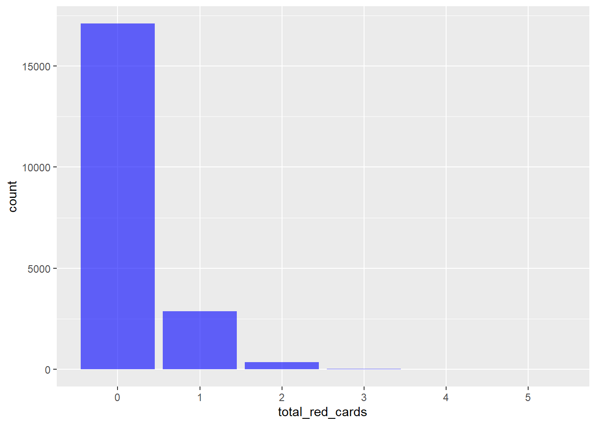
# Home vs. Away red cards (similar home and away red cards)
df_simple |>
pivot_longer(cols = c(home_red_cards, away_red_cards), names_to = "side",
values_to = "red_cards") |>
ggplot(aes(x = red_cards, fill = side)) +
geom_histogram(position = "identity", alpha = 0.5, binwidth = 1) +
scale_x_continuous(breaks = function(x) seq(floor(min(x)), ceiling(max(x)),
by = 1),
minor_breaks = NULL)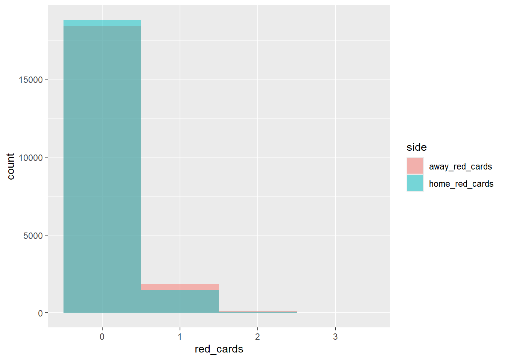
# Average number of red cards by league (league effects exist)
df_simple |>
group_by(competition) |>
summarise(
avg_red_cards = mean(total_red_cards, na.rm = TRUE),
se = sd(total_red_cards, na.rm = TRUE) / sqrt(n())
) |>
mutate(
ymin = avg_red_cards - 1.96 * se,
ymax = avg_red_cards + 1.96 * se,
competition = fct_reorder(competition, avg_red_cards)
) |>
ggplot(aes(x = competition, y = avg_red_cards)) +
geom_col(width = .7, fill = "steelblue") +
geom_errorbar(aes(ymin = ymin, ymax = ymax),
width = .25) +
coord_flip()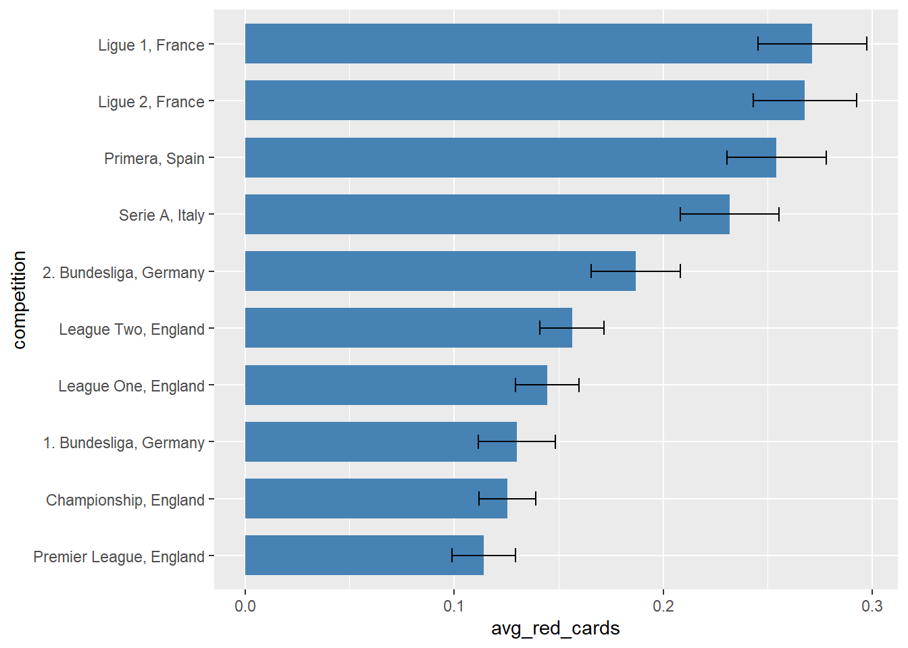
# Helper dataset
df_simple_avg_red_cards <- df_simple |>
group_by(season, date) |>
summarise(avg_red_cards = mean(total_red_cards)) |>
ungroup()
# Trend in average number of red cards over time across seasons (no effect)
df_simple_avg_red_cards |>
ggplot(aes(x = date, y = avg_red_cards)) +
geom_point() +
geom_smooth(method = "lm")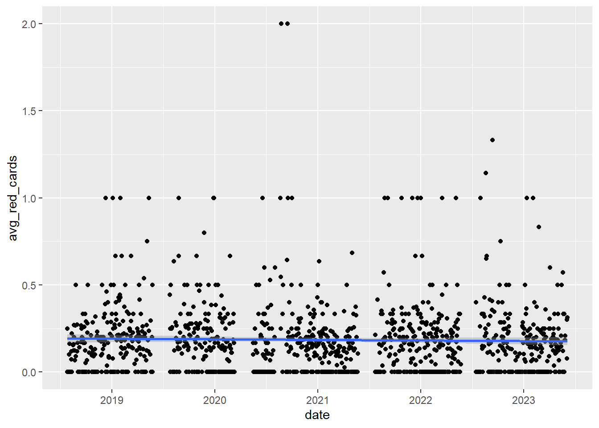
tidy(lm(avg_red_cards ~ date, data = df_simple_avg_red_cards))# A tibble: 2 × 5
term estimate std.error statistic p.value
<chr> <dbl> <dbl> <dbl> <dbl>
1 (Intercept) 0.356 0.219 1.63 0.104
2 date -0.00000917 0.0000118 -0.781 0.435# Trend in total goals over time within seasons (all seasons apart from
# 2018/2019 seem to have a declining number of average red cards over the season)
df_simple_avg_red_cards |>
ggplot(aes(x = date, y = avg_red_cards, colour = season, group = season)) +
geom_point() +
geom_smooth(method = "lm")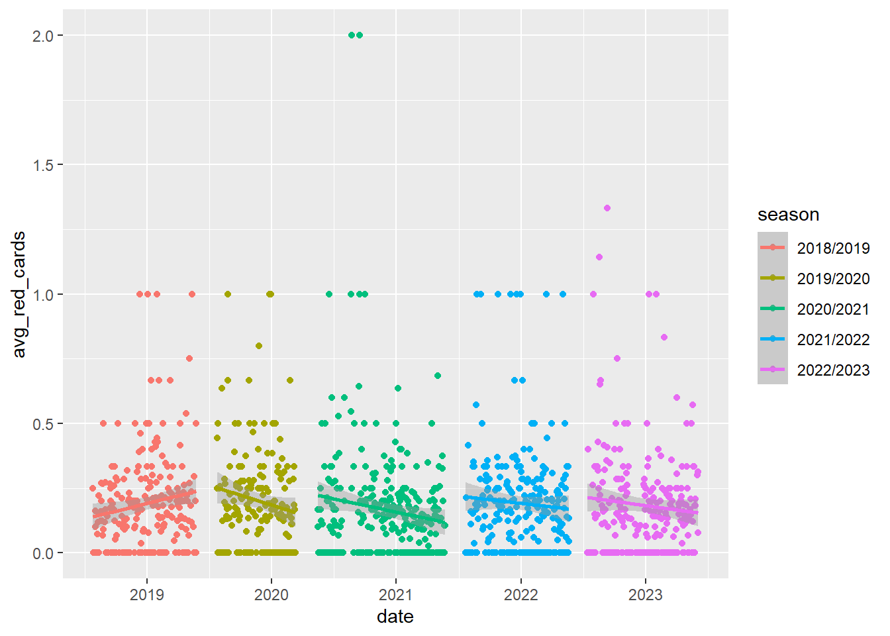
tidy(lm(avg_red_cards ~ date * season, data = df_simple_avg_red_cards))# A tibble: 10 × 5
term estimate std.error statistic p.value
<chr> <dbl> <dbl> <dbl> <dbl>
1 (Intercept) -5.66 2.92 -1.94 0.0524
2 date 0.000327 0.000163 2.01 0.0449
3 season2019/2020 13.5 5.25 2.56 0.0105
4 season2020/2021 11.0 3.56 3.10 0.00197
5 season2021/2022 8.78 4.16 2.11 0.0351
6 season2022/2023 9.41 4.05 2.32 0.0204
7 date:season2019/2020 -0.000743 0.000290 -2.57 0.0104
8 date:season2020/2021 -0.000607 0.000196 -3.09 0.00204
9 date:season2021/2022 -0.000481 0.000226 -2.13 0.0334
10 date:season2022/2023 -0.000511 0.000218 -2.34 0.0194 # Timing of red cards within games
df_all |>
filter(type == "red_card") |>
ggplot(aes(x = minute)) +
geom_histogram(fill = "blue", alpha = 0.5, binwidth = 1)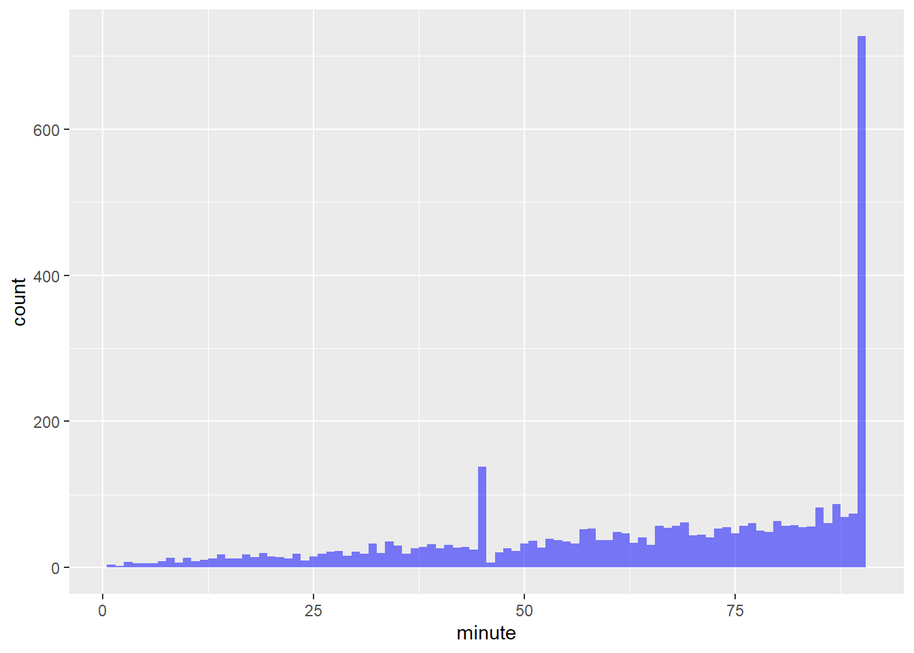
5 Simple across-matches comparison
A quick “bird’s-eye” baseline before diving into within-match dynamics.
Games are split into two buckets—those that contain at least one red card and those that do not—and the total number of goals in each match is compared. Because the timing of cards (and many other unobserved factors such as match intensity) is ignored, this exercise is highly susceptible to endogeneity: matches with reds are unlikely to be identical in every other respect to matches without them. Factors such as match intensity is likely to be an omitted variable and will biase our estimate. Still, the exercise helps anchor expectations.
5.1 Difference in means — no controls
Model (OLS)
\[ \text{TotalGoals}_i=\alpha+\beta\;\mathbf 1_{\{\text{RedCard}_i\}}+\varepsilon_i \]
– single binary regressor.
Assumptions Matches independent; treatment assignment ignorable (clearly violated).
Quick findings
Histograms, densities and box-plots show only a small visual shift.
Point estimate \(\hat{\beta}\approx0.05\) goals, p > 0.05 → no significant effect.
Interpretation discouraged because of omitted-variable bias.
# Histogram
df_simple |>
ggplot(aes(x = total_goals, fill = has_red_card)) +
geom_histogram(position = "identity", alpha = 0.5, binwidth = 1) +
scale_x_continuous(breaks = function(x) seq(floor(min(x)), ceiling(max(x)),
by = 1),
minor_breaks = NULL)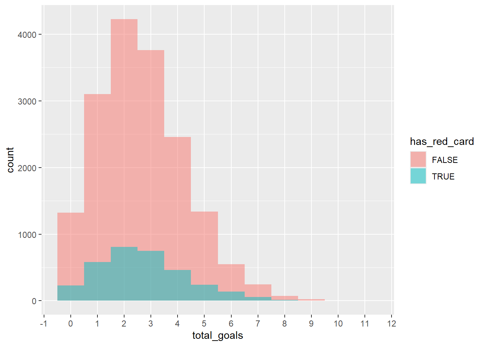
# Density differs slightly
df_simple |>
ggplot(aes(x = total_goals, color = has_red_card)) +
geom_density(linewidth = 0.75, adjust = 2.5) +
scale_x_continuous(breaks = function(x) seq(floor(min(x)), ceiling(max(x)),
by = 1),
minor_breaks = NULL)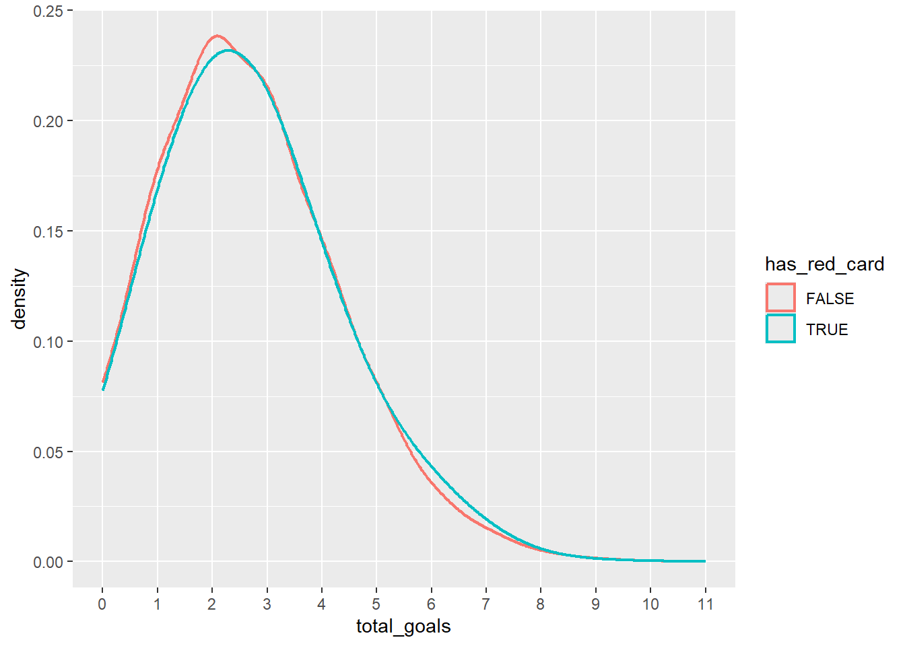
# Boxplot shows that total goals might differ by whether at least one red card
# occurred in a game
df_simple |>
ggplot(aes(x = has_red_card, y = total_goals)) +
geom_boxplot()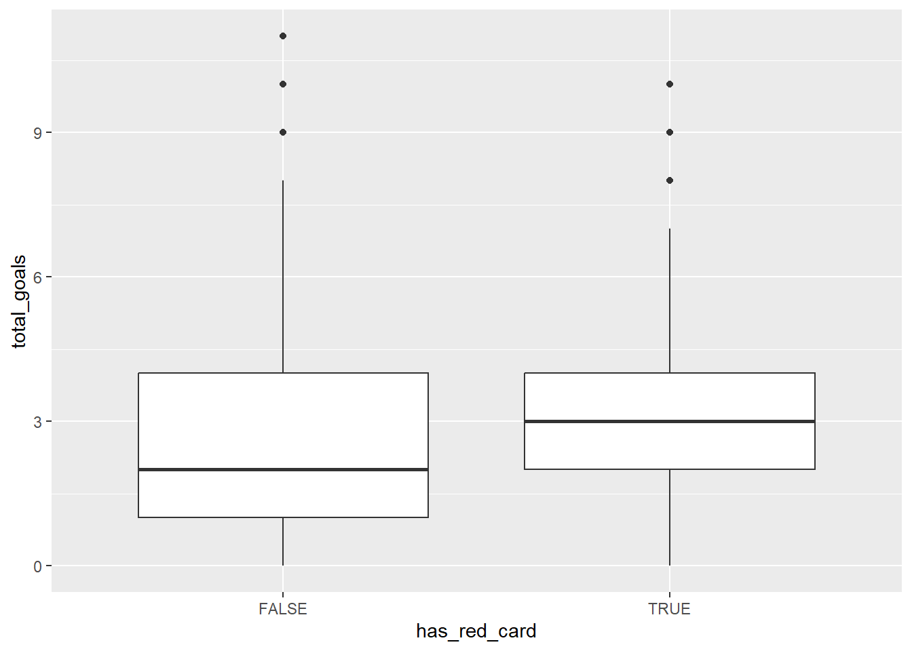
# Regression denies any effect of at least on red card on total goals on the
# 5% level
tidy(lm(total_goals ~ has_red_card, data = df_simple))# A tibble: 2 × 5
term estimate std.error statistic p.value
<chr> <dbl> <dbl> <dbl> <dbl>
1 (Intercept) 2.64 0.0125 211. 0
2 has_red_cardTRUE 0.0511 0.0313 1.63 0.1035.2 Difference in means — with controls
Model
\[ \begin{aligned} \text{TotalGoals}_i &= \alpha + \beta\,\mathbf{1}_{\{\text{RedCard}_i\}} + \gamma_1\,\text{Comp}_i + \gamma_2\,\text{HomeTeam}_i + \gamma_3\,\text{AwayTeam}_i \\[2pt] &\quad + \gamma_4\,\text{Season}_i + \gamma_5\,\bigl(\text{Season}_i\times\text{DayInSeason}_i\bigr) + \varepsilon_i . \end{aligned} \]
Assumptions Same as 5.1 but now conditional on observable league/team/season factors.
Results outline
\(\hat{\beta}\approx0.07\) goals per match, p < 0.05 (statistically significant).
Suggests red-card matches are slightly higher-scoring after controlling for league and team strength.
Still ignores when the card occurred and within-match causality.
# Regression finds statistically significant, positive effect of approximately
# 0.07 more goals for matches that had at least one red card.
tidy(
lm(total_goals ~ has_red_card + competition + home_team + away_team +
season + season:day_in_season,
data = df_simple)
)# A tibble: 512 × 5
term estimate std.error statistic p.value
<chr> <dbl> <dbl> <dbl> <dbl>
1 (Intercept) 2.65 0.416 6.37 1.92e-10
2 has_red_cardTRUE 0.0698 0.0313 2.23 2.58e- 2
3 competition2. Bundesliga, Germany 0.0411 0.694 0.0593 9.53e- 1
4 competitionChampionship, England -0.292 0.656 -0.445 6.56e- 1
5 competitionLeague One, England -0.219 0.643 -0.341 7.33e- 1
6 competitionLeague Two, England -0.597 0.633 -0.943 3.46e- 1
7 competitionPremier League, England -0.277 0.670 -0.414 6.79e- 1
8 competitionLigue 1, France 0.0501 0.122 0.412 6.81e- 1
9 competitionPrimera, Spain 0.874 0.670 1.30 1.92e- 1
10 competitionSerie A, Italy -0.293 0.659 -0.445 6.57e- 1
# ℹ 502 more rows5.3 Poisson GLM — count model with controls
Model
\[ \begin{aligned} \text{TotalGoals}_i &\sim \text{Poisson}(\mu_i), \\[4pt] \log \mu_i &= \alpha + \beta\,\mathbf{1}_{\{\text{RedCard}_i\}} + \gamma_1\,\text{Comp}_i + \gamma_2\,\text{HomeTeam}_i \\[2pt] &\quad + \gamma_3\,\text{AwayTeam}_i + \gamma_4\,\text{Season}_i + \gamma_5\,\bigl(\text{Season}_i\times\text{DayInSeason}_i\bigr). \end{aligned} \]
Diagnostics
- Poisson distribution more appropriate due to count nature of total number of goals data
- Pearson dispersion \(\hat{\phi}=0.98\) ⇒ no over-dispersion; Poisson suitable.
Results outline
- \(\exp(\hat{\beta})\approx1.026\) → matches with ≥ 1 red card have ≈ 2.6 % more goals on average, p < 0.05 (statistically significant).
Limitations (shared with 5.1 & 5.2)
- Still cross-sectional; cannot say whether the red card caused the extra goals or both stem from some unmeasured match characteristic.
# Poisson GLM
pois_fit <- glm(
total_goals ~ has_red_card + competition + home_team + away_team +
season + season:day_in_season,
family = poisson(),
data = df_simple
)
# Check over-dispersion (0.976, so close to 1 --> Poisson distributional
# assumption is fine, do not need to switch to negative binomial)
sum(residuals(pois_fit, type = "pearson")^2) / pois_fit$df.residual[1] 0.9756669# Exponentiated coefficients (controlling for competition, teams and season
# effects games with a red card have 2.6% more goals (statistically
# significant))
tidy(pois_fit, exponentiate = TRUE)# A tibble: 512 × 5
term estimate std.error statistic p.value
<chr> <dbl> <dbl> <dbl> <dbl>
1 (Intercept) 2.66 0.161 6.09 0.00000000114
2 has_red_cardTRUE 1.03 0.0119 2.19 0.0284
3 competition2. Bundesliga, Germany 1.01 0.262 0.0317 0.975
4 competitionChampionship, England 0.870 0.265 -0.526 0.599
5 competitionLeague One, England 0.896 0.260 -0.422 0.673
6 competitionLeague Two, England 0.774 0.256 -1.00 0.317
7 competitionPremier League, England 0.876 0.270 -0.489 0.625
8 competitionLigue 1, France 1.02 0.0478 0.357 0.721
9 competitionPrimera, Spain 1.35 0.249 1.22 0.222
10 competitionSerie A, Italy 0.891 0.255 -0.454 0.650
# ℹ 502 more rows6 Within game comparison
Games with exactly one red card are compared for the goals scored before and after the red card (serves as close to a valid counterfactual as possible).
A simple paired test (§ 6.2) shows that the number of goals per minute scored increases once a red card is shown, but it weights all time windows after a red card is shown equally.
A Poisson GLM with a log-exposure offset (§ 6.3) corrects that imbalance: after controlling for card timing, league fixed effects, team fixed effects and season fixed effects and trends, the per-minute goal rate is ≈ 55 % higher when a team is reduced to ten players. Cluster-robust errors and a dispersion check confirm the finding’s robustness.
Therefore, both models agree (although more weight should be placed on the conclusion of the Poisson GLM with a log-exposure offset since it is more appropriate) that red cards lead to more goals.
6.1 Prepare data for comparisons
For simplicity, only matches with exactly one red card throughout the whole match are considered.
Furthermore, two separate datasets were created:
- Full – drop matches with a 90′ card (since a card at 90’ has no “post” exposure).
- Trim < 80′ – smaller sample omitting cards in the 80–89′ range as well.
The second dataset is used for the paired pre/post comparison since the post number of goals per minute rate varies wildly (is unreasonably large if a goal is scored after the red card when the minute count is low).
The first dataset is used for the Poisson GLM with a log-exposure offset, since this model automatically downweights observations with low exposure, i.e. with a low minute count, hence no removal is necessary.
df_all_one_red <- df_all |>
filter(total_red_cards == 1) |>
rename(red_card_minute = red_card1_minute) |>
select(-c(red_card2_minute, red_card3_minute, red_card4_minute,
red_card5_minute, has_red_card, home_red_cards, away_red_cards,
total_red_cards)) |>
group_by(game_id) |>
mutate(
goals_pre = sum(type == "goal" & minute < red_card_minute),
goals_post = sum(type == "goal" & minute > red_card_minute),
minutes_pre = first(red_card_minute),
minutes_post = 90 - first(red_card_minute),
rate_pre = goals_pre / minutes_pre,
rate_post = goals_post / minutes_post,
rates_diff = rate_post - rate_pre
) |>
ungroup()
df_rates_all <- df_all_one_red |>
filter(red_card_minute != 90) |> # exclude matches where the red card
# happened in minute 90 (can't use for estimation of what happens after a
# red card is given)
group_by(game_id) |>
summarise(
across(-c(minute, side, type), first)
) |>
ungroup()
df_rates_all_long <- df_rates_all |>
pivot_longer(
cols = c("rate_pre", "rate_post",
"goals_pre", "goals_post",
"minutes_pre", "minutes_post"),
names_to = c(".value", "period"),
names_pattern = "(.*)_(pre|post)"
) |>
mutate(period = as_factor(period)) |>
select(-c(rates_diff))
df_rates_80 <- df_all_one_red |>
filter(red_card_minute < 80) |> # exclude matches where the red card
# happened after minute 80
group_by(game_id) |>
summarise(
across(-c(minute, side, type), first)
) |>
ungroup()
df_rates_80_long <- df_rates_80 |>
pivot_longer(
cols = c("rate_pre", "rate_post",
"goals_pre", "goals_post",
"minutes_pre", "minutes_post"),
names_to = c(".value", "period"),
names_pattern = "(.*)_(pre|post)"
) |>
mutate(period = as_factor(period)) |>
select(-c(rates_diff))6.2 Paired pre/post comparison
(linear model on the within-match difference of goal-per-minute rates)
Model specification
\[ \begin{aligned} d_i &= \alpha + \beta_1\,\text{RedMin}_i + \beta_2\,\text{Comp}_i + \beta_3\,\text{HomeTeam}_i + \beta_4\,\text{AwayTeam}_i \\[2pt] &\quad + \beta_5\,\text{Season}_i + \beta_6\,\bigl(\text{Season}_i\times\text{DayInSeason}_i\bigr) + \varepsilon_i . \end{aligned} \]
where
\[ d_i=\text{rate}_{\text{post}}-\text{rate}_{\text{pre}},\qquad \text{rate}_{\text{pre}}=\frac{g_{\text{pre}}}{m_{\text{pre}}},\qquad \text{rate}_{\text{post}}=\frac{g_{\text{post}}}{m_{\text{post}}} \]
with \(g_{\bullet}\) = goals, \(m_{\bullet}\) = minutes.
- Key assumptions
- The pre-card rate is a valid counter-factual for the post-card rate, i.e. match would have evolved with same rate as before the red card had the red card not happened.
- Independence across matches
- Normality of \(d_i\) (checked via histogram).
- In estimation of average difference every match receives equal weight, regardless of how long the “post” window is, i.e. exposure is ignored (e.g. difference in rates for a match where the red card occurred in the 15’ minute is weighted the same as the difference in rates for a match where the red card occurred in the 75’ minute).
Results
Mean difference \(\hat{\alpha}\) = 0.0126 goals ∙ min\(^{-1}\)
t-statistic = 12.34; clustered p-value ≈ 0
After adjusting for card minute, competition, home/away teams, and season, the coefficient on \(d_i\) no longer remains significant at the 5 % level. But this is only due to baseline issues with the dummy variables.
When comparing coefficients in the stacked linear model going from no controls to all relevant controls, the coefficient does not change, meaning that the effect is robust (makes sense since most controls are constant across games anyways).
# Difference in pre/post red card goals per minute rates looks approximately
# normal
df_rates_80 |>
ggplot(aes(x = rates_diff)) +
geom_histogram()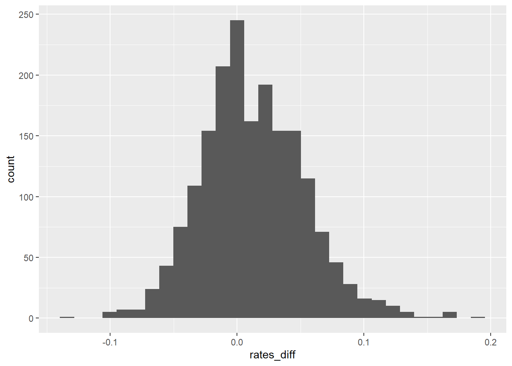
# Test whether rates_diff is significantly different from zero (linear
# regression is equivalent to paired t-test)
# No controls
tidy(lm(rates_diff ~ 1, data = df_rates_80))# A tibble: 1 × 5
term estimate std.error statistic p.value
<chr> <dbl> <dbl> <dbl> <dbl>
1 (Intercept) 0.0126 0.000946 13.3 1.72e-38# Control for all mentioned factors in EDA
# Omitted team fixed effects for readability
tidy(lm(rates_diff ~ 1 + red_card_minute + competition +
home_team + away_team + season + season:day_in_season,
data = df_rates_80)) |>
filter(!str_detect(term, "team"))# A tibble: 20 × 5
term estimate std.error statistic p.value
<chr> <dbl> <dbl> <dbl> <dbl>
1 (Intercept) 0.0431 0.0258 1.67 0.0954
2 red_card_minute 0.000133 0.0000560 2.38 0.0173
3 competition2. Bundesliga, Germany -0.00284 0.0442 -0.0642 0.949
4 competitionChampionship, England -0.000685 0.0560 -0.0122 0.990
5 competitionLeague One, England -0.00373 0.0545 -0.0685 0.945
6 competitionLeague Two, England -0.00956 0.0532 -0.180 0.857
7 competitionPremier League, England -0.0229 0.0578 -0.396 0.692
8 competitionLigue 1, France 0.00287 0.00882 0.326 0.745
9 competitionPrimera, Spain -0.0264 0.0558 -0.474 0.636
10 competitionSerie A, Italy -0.0264 0.0562 -0.469 0.639
11 competition1. Bundesliga, Germany -0.0284 0.0469 -0.605 0.545
12 season2019/2020 -0.00696 0.00757 -0.919 0.358
13 season2020/2021 -0.00207 0.00773 -0.268 0.789
14 season2021/2022 0.00725 0.00704 1.03 0.303
15 season2022/2023 -0.00207 0.00707 -0.292 0.770
16 season2018/2019:day_in_season 0.0000405 0.0000282 1.43 0.152
17 season2019/2020:day_in_season 0.0000559 0.0000430 1.30 0.193
18 season2020/2021:day_in_season 0.0000216 0.0000247 0.875 0.382
19 season2021/2022:day_in_season -0.0000355 0.0000287 -1.24 0.216
20 season2022/2023:day_in_season 0.00000306 0.0000271 0.113 0.910 # Do comparison in long format to get baseline rate (pre rate) and difference
# to it (post rate) to get a sense of magnitude of difference
# No controls
tidy(lm(rate ~ period, data = df_rates_80_long))# A tibble: 2 × 5
term estimate std.error statistic p.value
<chr> <dbl> <dbl> <dbl> <dbl>
1 (Intercept) 0.0253 0.000683 37.0 1.07e-255
2 periodpost 0.0126 0.000966 13.0 8.34e- 38# Control for all mentioned factors in EDA
lmCR <- lm(rate ~ period + red_card_minute + competition +
home_team + away_team + season + season:day_in_season,
data = df_rates_80_long)
# Cluster-robust SEs at the match level to get correct inference
# (since "pre" and "post" observations are correlated for each match)
# Period indicator (pre/post) is statistically significant on the 5% level
# (Output hidden since too many coefficients)
invisible(
coeftest(lmCR, vcov = vcovCL(lmCR, cluster = ~ game_id))
)
# Omitted team fixed effects for readability
tidy(lmCR) |>
filter(!str_detect(term, "team"))# A tibble: 21 × 5
term estimate std.error statistic p.value
<chr> <dbl> <dbl> <dbl> <dbl>
1 (Intercept) 0.0196 0.0132 1.49 1.37e- 1
2 periodpost 0.0126 0.000954 13.2 1.48e-38
3 red_card_minute 0.000145 0.0000285 5.09 3.74e- 7
4 competition2. Bundesliga, Germany 0.00435 0.0225 0.193 8.47e- 1
5 competitionChampionship, England -0.0160 0.0285 -0.562 5.74e- 1
6 competitionLeague One, England -0.0151 0.0278 -0.545 5.86e- 1
7 competitionLeague Two, England -0.0203 0.0271 -0.748 4.54e- 1
8 competitionPremier League, England -0.0281 0.0295 -0.955 3.40e- 1
9 competitionLigue 1, France 0.00986 0.00449 2.20 2.82e- 2
10 competitionPrimera, Spain 0.00378 0.0284 0.133 8.94e- 1
# ℹ 11 more rows6.3 Poisson GLM with log-exposure offset
(count model respecting unequal time windows and match clustering)
Model specification
\[ \begin{aligned} y_{it} &\sim \text{Poisson}(\mu_{it}), \\[4pt] \log \mu_{it} &= \underbrace{\log e_{it}}_{\text{offset}} + \gamma_0 + \gamma_1\,\mathbf{1}_{\{t=\text{post}\}} + \delta_1\,\text{RedMin}_i + \delta_2\,\text{Comp}_i \\[2pt] &\quad + \delta_3\,\text{HomeTeam}_i + \delta_4\,\text{AwayTeam}_i + \delta_5\,\text{Season}_i + \delta_6\,\bigl(\text{Season}_i\times\text{DayInSeason}_i\bigr). \end{aligned} \]
\(y_{it}\) = goal count for match \(i\) in period \(t\in\{\text{pre},\text{post}\}\).
\(e_{it}\) = minutes of exposure in that period (offset coefficient fixed at 1).
Offset \(\log e_{it}\) fixes its coefficient at 1, so \(\exp(\gamma_1)\) is the multiplicative change in the goal rate per minute once a red card is on the pitch.
Key assumptions
- Conditional on covariates, goals follow a Poisson process with constant rate within each period. No over-dispersion which can be checked with over-dispersion diagnostic (\(\phi\)); if \(\phi\gg1\), switch to negative-binomial
- Independence across matches; correct specification of offset.
- No major omitted variables that correlate with both the appearance of a red card and subsequent scoring (limited by the dataset’s variable set).
Enhancements over § 6.2
Unequal exposure handled automatically via the offset; long post-card windows contribute proportionately more information.
Proper count likelihood; no Normality assumption at small goal counts.
Results
Dispersion \(\hat{\phi}=1.05\) ⇒ Poisson adequate (no need for NB).
Exponentiated period coefficient \(\exp(\hat{\gamma}_1)=\;1.55\)
⇒ goal-per-minute rate increases by \(≈ 55 \%\) after a red card.t-statistic = 15.45; clustered p-value ≈ 0
red_card_minutecoefficient \(\exp(\hat{\delta}_1) >/≈ 1\) ⇒ later cards yield a higher / similar increase to goals per minute.Competition, team and season controls largely insignificant.
# Fit Poisson GLM with a log-offset and controlling for all factors mentioned
# in EDA
mod_pois <- glm(
goals ~ period + red_card_minute + competition + home_team + away_team +
season + season:day_in_season,
family = poisson,
data = df_rates_all_long,
# trick: move log(minutes) into 'offset' so its coefficient is fixed at 1
offset = log(minutes)
)
# Phi = 1.05 --> not over-dispersed, meaning negative binomial distribution is
# not needed and Poisson distributional assumption is appropriate
phi <- with(summary(mod_pois), deviance / df.residual)
cat("Dispersion φ =", round(phi, 2), "\n")Dispersion φ = 1.05 # Cluster-robust SEs at the match level to get correct inference
# (since "pre" and "post" observations are correlated for each match)
# Period indicator (pre/post) is statistically significant on the 5% level
# (Output hidden since too many coefficients)
invisible(
coeftest(mod_pois, vcov = vcovCL(mod_pois, cluster = ~ game_id))
)
# The exponentiated coefficient for the period indicator (pre/post) is equal to
# 1.55, meaning that once a red card is shown the chance of a goal in any given
# minute rises by 55%
# Omitted team fixed effects for readability
tidy(mod_pois, exponentiate = TRUE) |>
filter(!str_detect(term, "team"))# A tibble: 21 × 5
term estimate std.error statistic p.value
<chr> <dbl> <dbl> <dbl> <dbl>
1 (Intercept) 0.0166 0.366 -11.2 4.53e-29
2 periodpost 1.55 0.0296 14.9 5.31e-50
3 red_card_minute 1.00 0.000723 5.54 3.00e- 8
4 competition2. Bundesliga, Germany 1.14 0.634 0.201 8.41e- 1
5 competitionChampionship, England 1.11 0.698 0.152 8.79e- 1
6 competitionLeague One, England 1.18 0.675 0.244 8.07e- 1
7 competitionLeague Two, England 0.916 0.658 -0.133 8.94e- 1
8 competitionPremier League, England 0.777 0.726 -0.347 7.29e- 1
9 competitionLigue 1, France 1.14 0.124 1.03 3.01e- 1
10 competitionPrimera, Spain 0.956 0.640 -0.0697 9.44e- 1
# ℹ 11 more rows